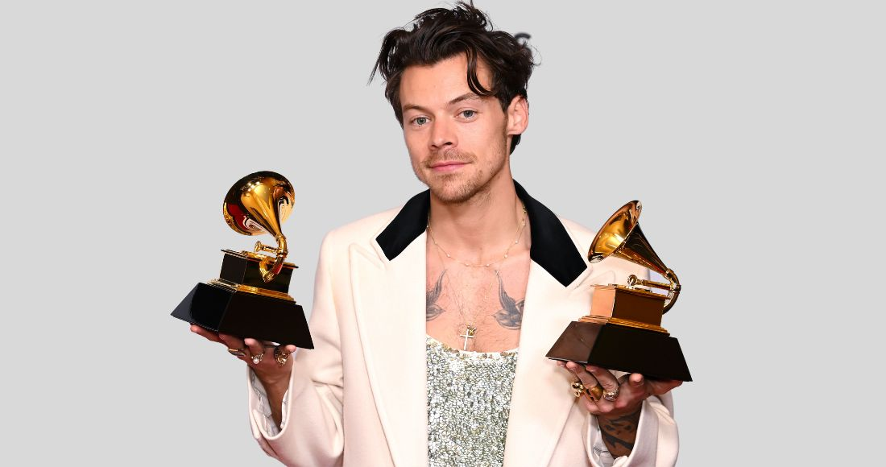

A lo largo de su carrera como solista, Styles también ha logrado conseguir varios premios y reconocimientos por su música e imagen, entre los más importantes: un premio Grammy a la mejor interpretación de solista pop por su sencillo «Watermelon Sugar», dos premios Brit, el primero en 2017 por el video del sencillo «Sign of the Times» y el segundo en 2021 también por su tema Watermelon Sugar al mejor sencillo británico. Además de esto, también ha ganado un American Music Award, cinco iHeartRadio Music Awards, cuatro premios MTV entre los que se incluye un Video Music Award, un premio de música Billboard, dos premios ARIA de Australia, un premio Juno de Canadá, 4 premios BMI y 9 Teen Choice Awards. En la gala de los Grammy del 2023, el artista obtuvo el premio a mejor disco del año y mejor álbum vocal pop con "Harry´s House".
